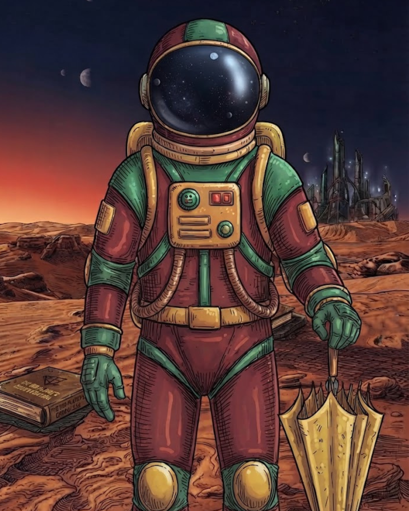
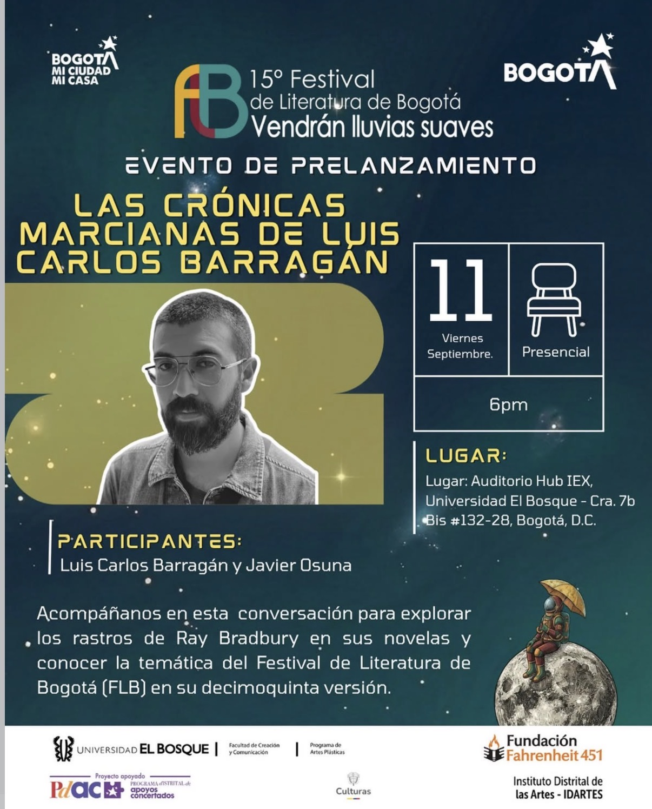
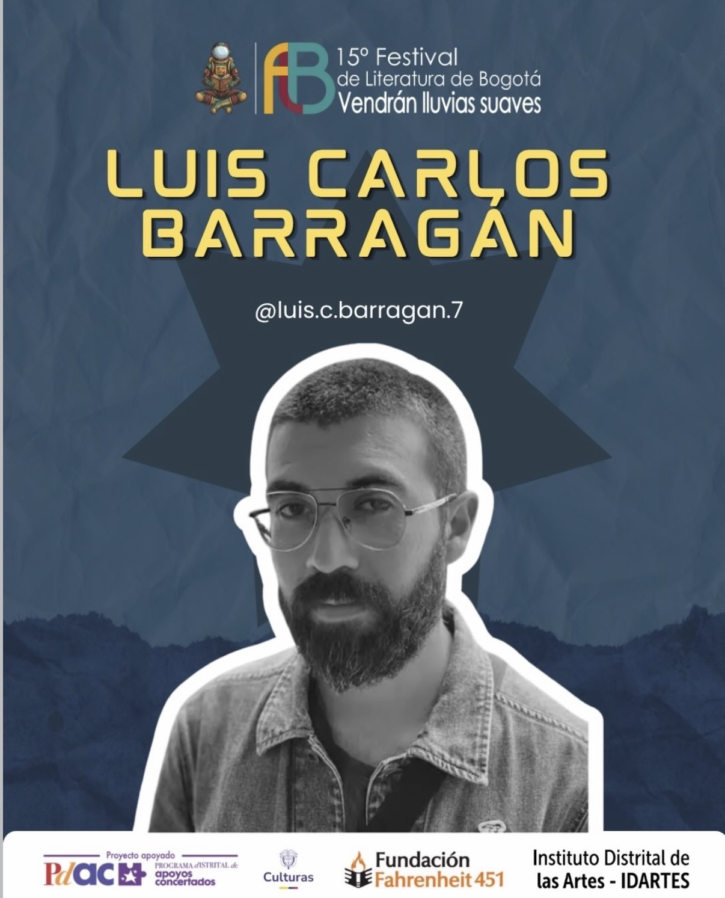
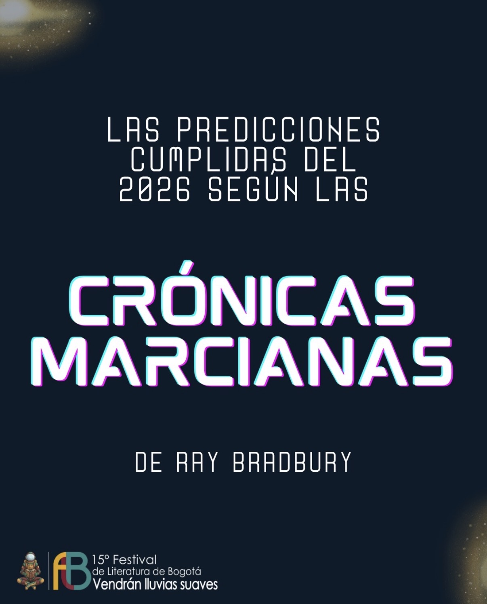
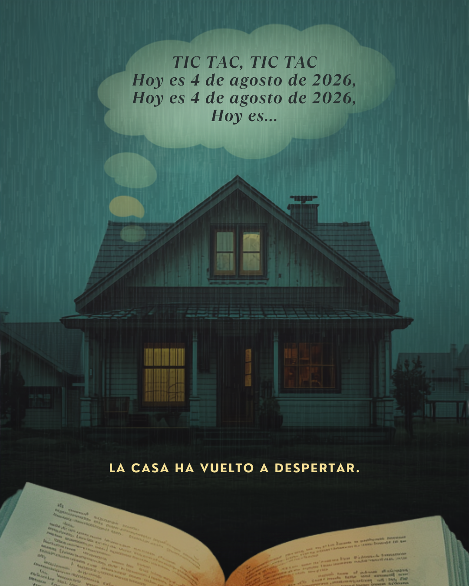

--
Días
Un homenaje a la ciencia ficción y al cuento de Ray Bradbury que le da nombre a esta edición del Festival de Literatura de Bogotá.
 Edición actual
Ir a "Vendrán Lluvias Suaves" →
Edición actual
Ir a "Vendrán Lluvias Suaves" →

Ciclo gratuito de talleres virtuales inspirados en el universo de Ray Bradbury.
Leer más →
Acompáñanos a celebrar el inicio oficial de nuestro decimoquinto festival en este gran evento de prelanzamiento en la Universidad El Bosque.
Leer más →
Arrancamos a presentar a los artistas que nos acompañarán en el Festival de Literatura de Bogotá, y qué mejor manera de abrir camino que con Luis Carlos Barragán.
Leer más →
En este carrusel, te mostramos algunas predicciones que se cumplieron 76 años después.
Leer más →
Durante décadas, esta fue solo una fecha escrita en un cuento de Ray Bradbury. Hoy, esa predicción deja de ser ficción o futuro para convertirse en nuestro presente.
Leer más →